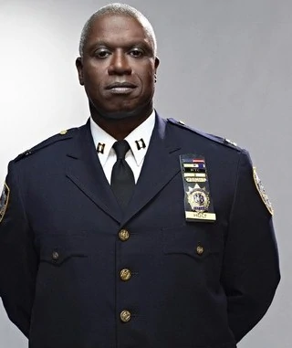
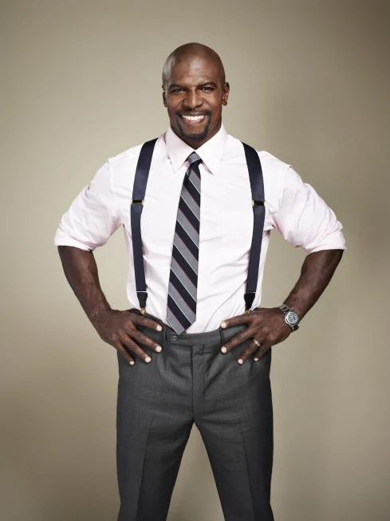
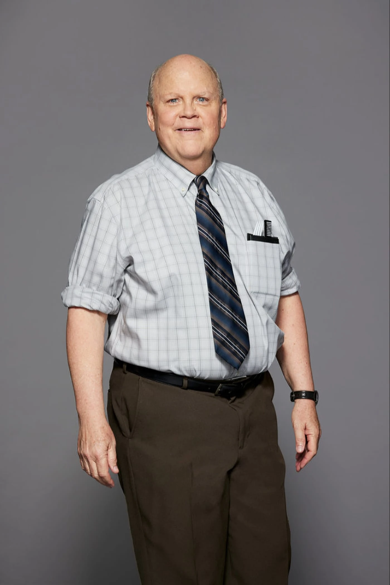
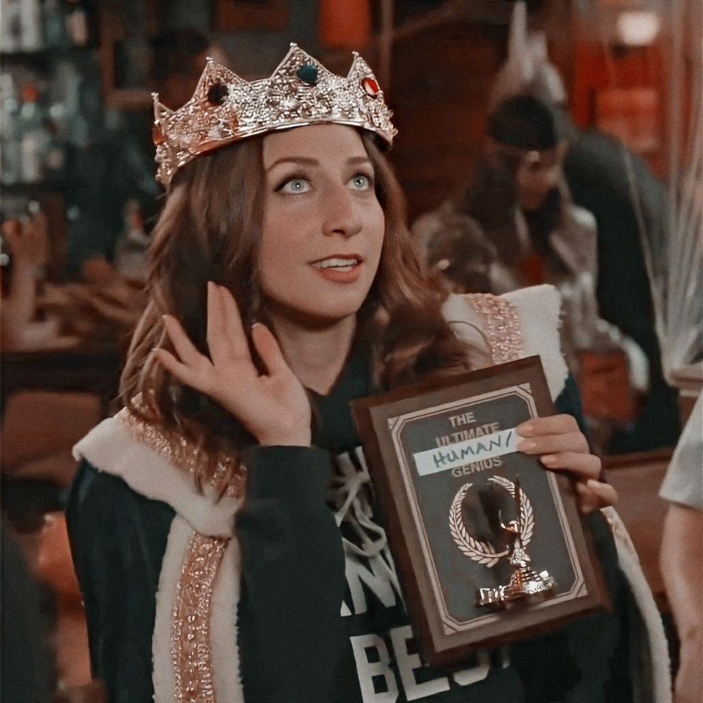

Es un personaje de la serie Brooklyn 99 de NBC interpretado por Andy Samberg, actor que ganó popularidad por sus personajes en SNL.
Jake es un detective en el recinto 99 de Brooklyn, Nueva York. Trabaja con:
Detective Amy Santiago
La mejor detective del recinto. Su mayor ambición es ser la capitana más joven del NYPD(Policía de Nueva York).
Detective Charles Boyle
El mejor amigo de Jake. Es un aficionado a la comida.
Capitán Raymond Holt
El capitán del recinto. Es el primer capitán de Nueva York afroamericano y abiertamente homosexual.

Sargento Terry Jeffords
El sargento del recinto. Su puesto es inferior al del capitán y dirige a los detectives.

Detective Rosa Díaz
La detective más intimidante. Estuvo en la academia de policía con Jake y aprendieron juntos.
Detective Norm Scully
Es el detective más mayor. Él y Hitchcock son mejores amigos y llevan trabajando juntos desde los 80.
Detective Michael Hitchcock
El detective más desagradable. No se da cuenta de la incomodidad que genera.

Gina Linetti
No es policía. Es la administradora del recinto y tiene mucha presencia en redes sociales.

Aficiones:
Resolver delitos
Ver La jungla de cristal
Actor:
Andy Samberg es un actor y cómico norteamericano que comenzó su carrera en SNL(Saturday Night Live)
Su mayor éxito fue su papel en Brooklyn 99.